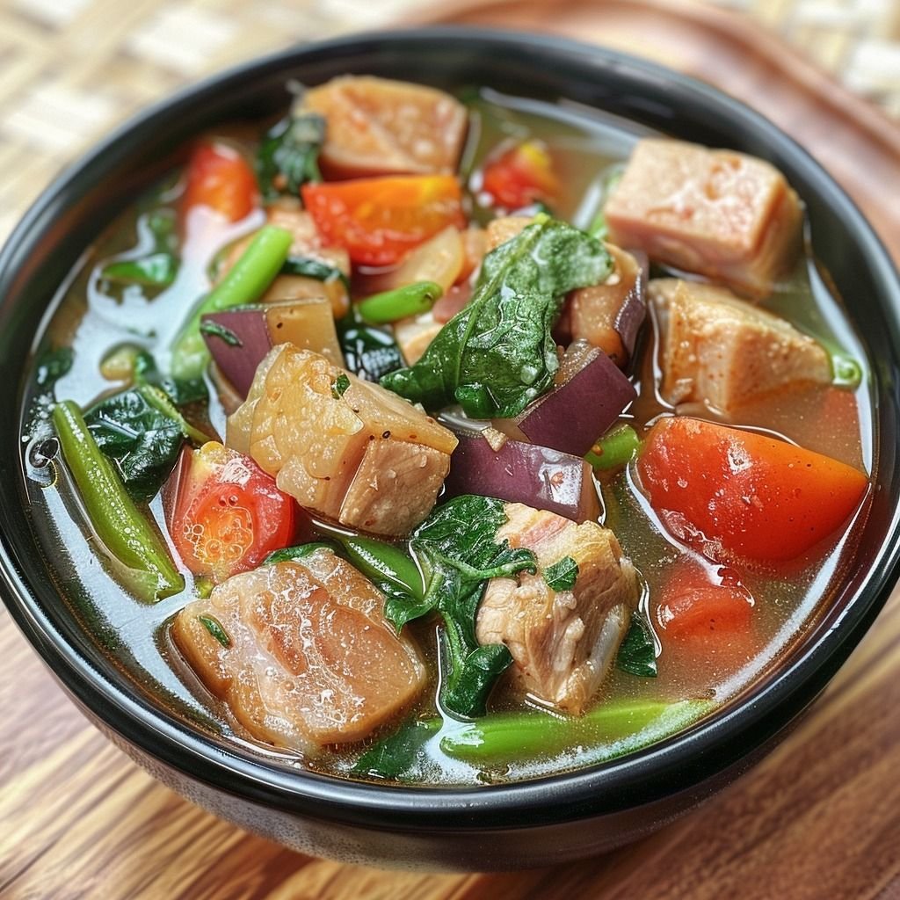

ADOBO

Adobo is a Filipino dish made by marinating meat in vinegar, soy sauce, garlic, and spices. It is then simmered until tender and flavorful.
SINIGANG
Sinigang is a sour soup from the Philippines, usually made with tamarind and meat or seafood. It’s served hot with vegetables